Telus: Informing Customers
Restructuring the Telus internet Plans Page so customers understood the deal well enough to commit, without being pushed.
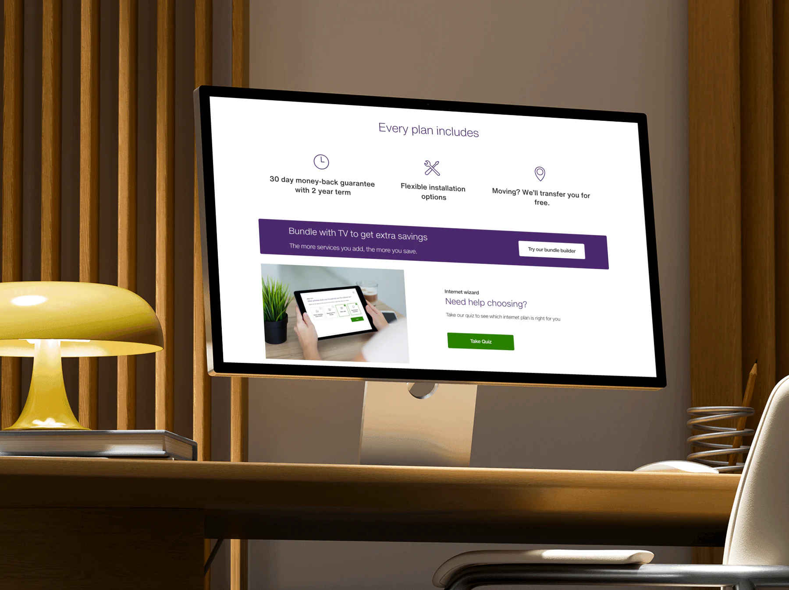
Problem
Client analytics showed prospective customers leaving the Plans Page too soon, rarely engaging and rarely buying. This was the second project on the same retainer after the meganav work.
01Map
People were either missing the information they needed or weren't confident enough to commit to a plan.
I reworked a journey for each of the client's behavioural segments. In our buyer survey, one respondent couldn't tell what 'fast' even means. The term, the speed and the price were all things people felt they couldn't verify.
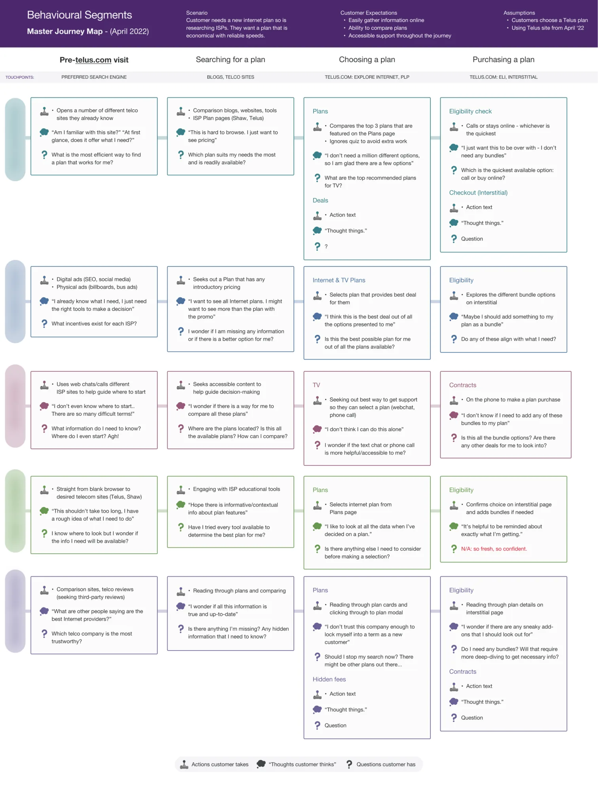
02Restructure
The page was restructured so the decision came before the detail.
Mike, Marie and I wove educational elements into the cards using Telus's Allium design system, so people bought plans that served them without dark patterns. Each idea started as a problem and a hypothesis.
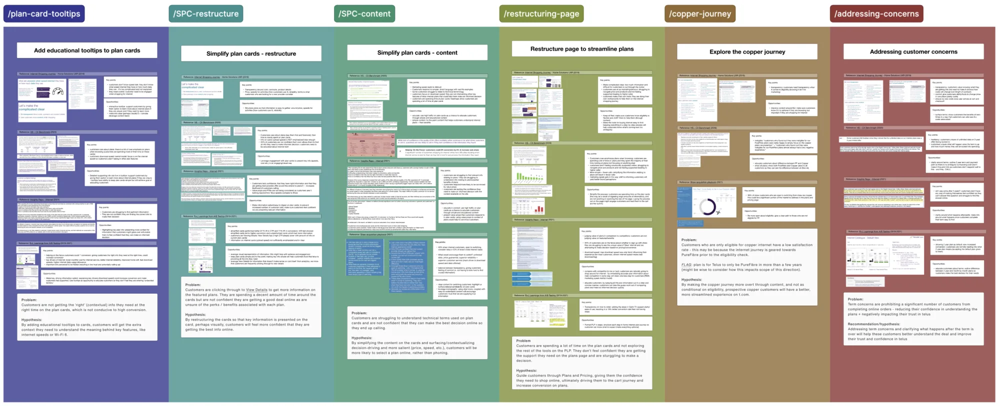
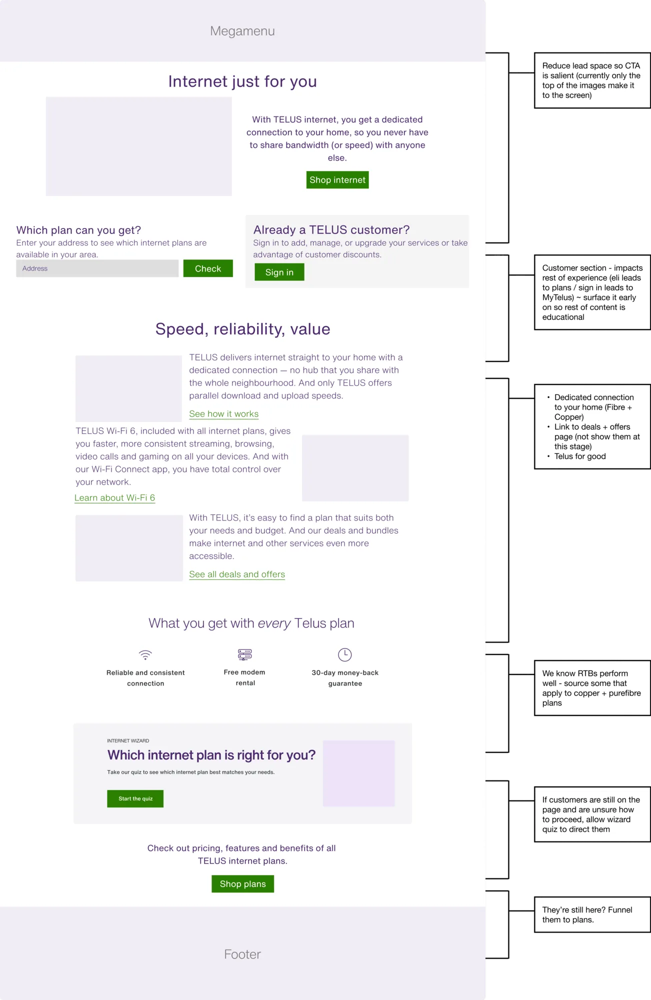
03Design
Tooltips didn't survive mobile, so their content moved into the plan modals.
Interest-holder review shaped the cards as much as research did. Fast, Faster and Fastest stayed for internal history. The fourth card, usually for offers, went to the internet quiz.
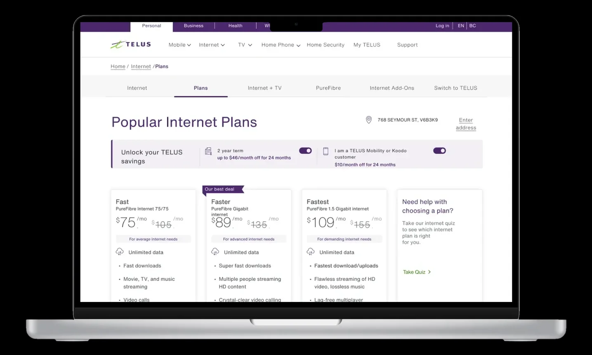
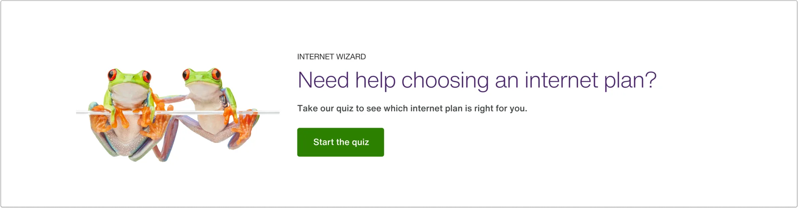
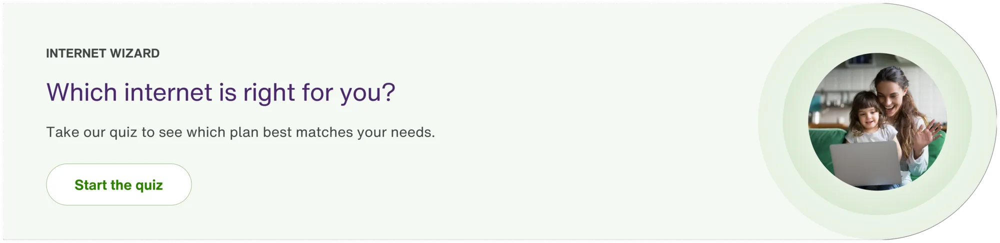
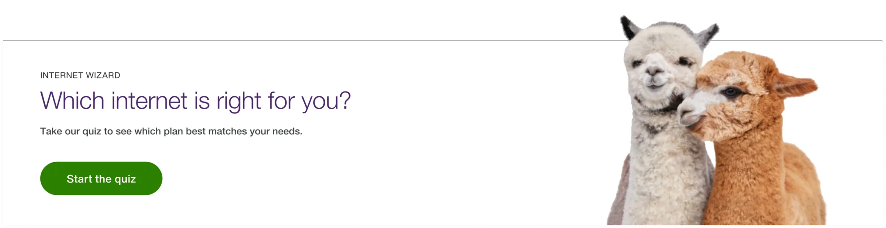
04Test
Confidence was breaking down at the term, so that's what we tested.
Small tweaks hadn't moved the numbers, so we tested a structural change: pulling term selection out of the cards and explaining what happens after it. The version with the most information was favoured.
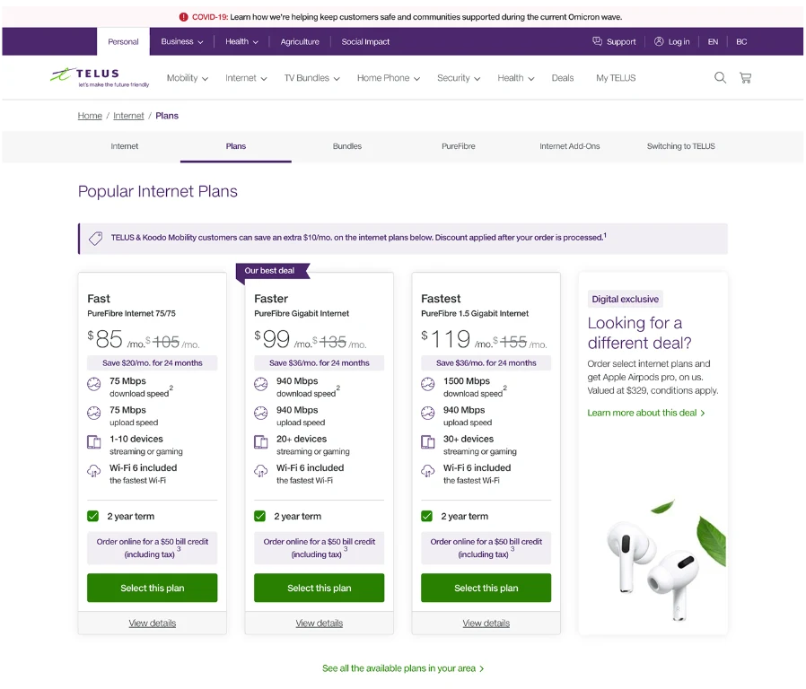
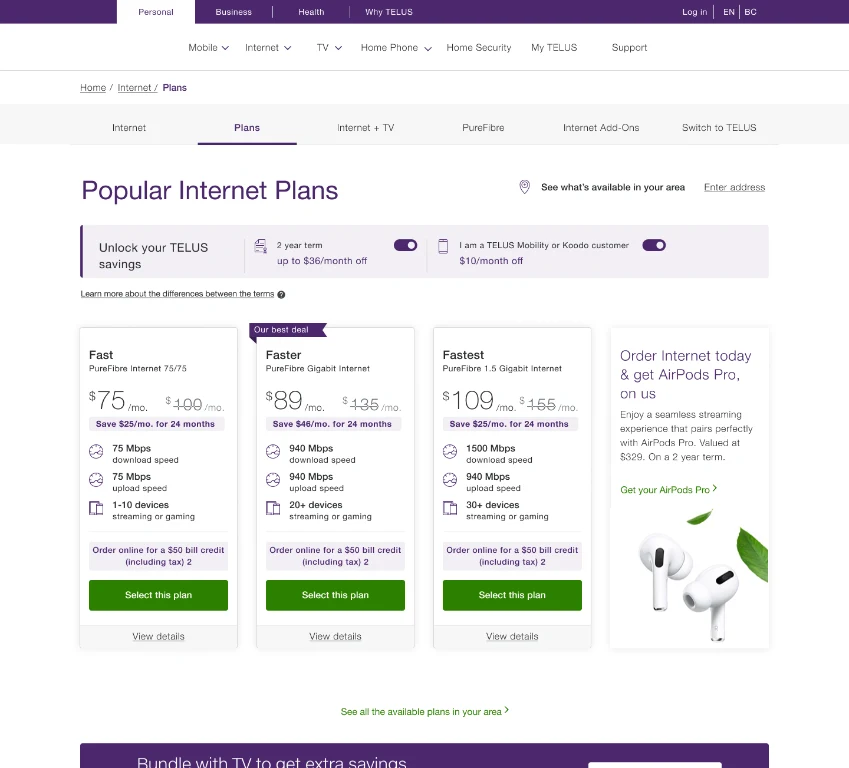
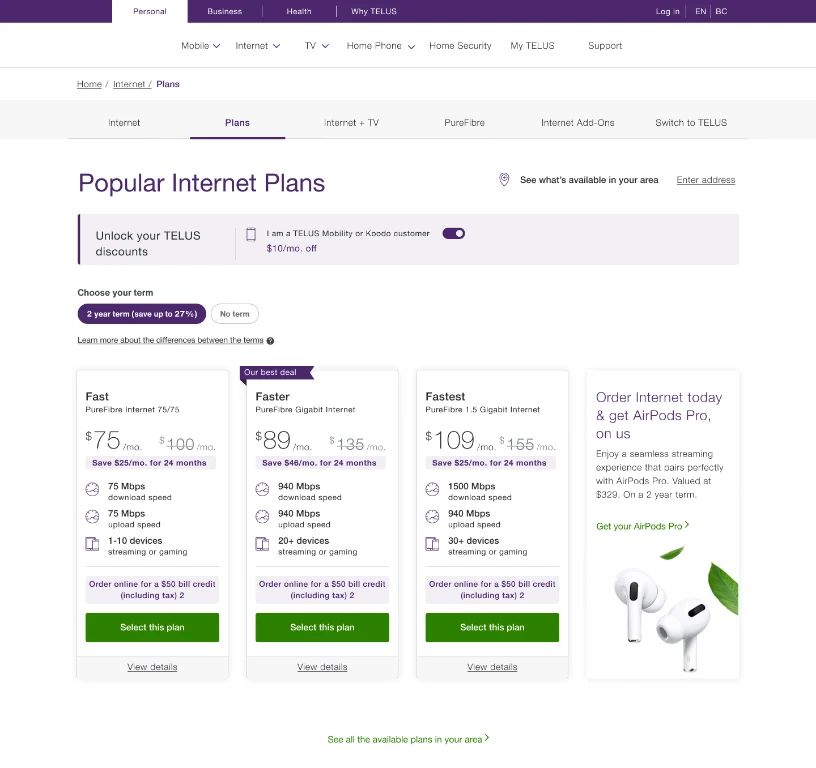
Results
engagement*
*Our researchers read this as a good sign: people got what they needed and moved on to purchase.
What I learned
Users weren't reluctant to commit, they were reluctant to commit to something they didn't fully understand. Putting the term next to the choice did more than another line of copy.